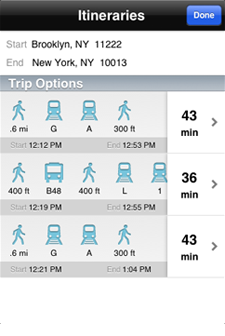

JoyRide gets you where you need to go via bike, transit, or walking.


Where does JoyRide work?
JoyRide is available in many metropolitan regions in North America. If you don't see your city on the map below, tell your local transit agency via our Transit Data Dashboard.
Who is behind JoyRide?
JoyRide was built by the great team at OpenPlans, with your support!